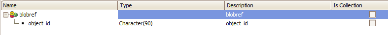

This is the same example as Procedures as REST: Using SDT as input to the procedure. In addition, it shows how to send a blob variable data type as input to the Rest web service procedure.
The example consists of adding a customer to the Customer table, where there is a blob field representing the customer's photo.
The "AddCustomer" procedure is the same as the one in the example Procedures as REST: Using SDT as input to the procedure.
The client consumer's particularity is that it has to do two HTTP POSTs:
1. An HTTP POST to "<Object name>/gxobject" (under the web application URL) attaching the file (blob) to the HTTP Request. This returns a reference that should be used to insert the blob in the database table.
2. Next, it executes an HTTP POST to the REST procedure sending a Json request which includes the information to be processed.
Source Code of the GeneXus Client:
&ImagePath = 'CustomerPhoto.jpg'
&httpclient.Host = &host //&httpclient is an HTTPClient variable data type
&httpclient.Port = &port
&httpclient.BaseUrl = &urlbase + '/rest/' //example: '/webappname/rest/'
&httpclient.AddHeader('Content-type',' application/jpg ')
&httpclient.AddFile(&ImagePath)
&httpclient.Execute('POST','AddCustomer/gxobject')
&lvc = &httpclient.ToString()
&blobref.FromJson(&lvc)
&ref = &blobref.object_id //&blobref is based on blobref data type (*)
&Cache = Cache.getCache("FL") //this line only applies to version >= V15 and <= v17U3
&ref = "gxupload:" + &cache.Get(&ref.Substring(&ImagePath.IndexOf(!':')+1)) //this line only applies to version >= V15 and <= v17U3
&customersdt.CustomerId= &customerId
&customersdt.CustomerName = &customerName
&customersdt.Customerbirthdate = &customerbirthdate
&customersdt.CustomerPayDate = &customerPayDate
&customersdt.CustomerPhoto = &ref
&body = '{"Customersdt":' + &customersdt.ToJson() + '}'
&httpclient.AddHeader('Content-type','application/json')
&httpclient.AddString(&body)
&httpclient.Execute('POST','AddCustomer')
(*) blobref data type:

Lastly, it processes the HTTP Client response.
Note: Regarding on how to consume a REST service (generated by GeneXus or not), GeneXus provides the OpenAPI import tool.
| Backlinks |
| Toc:Rest web services in GeneXus |